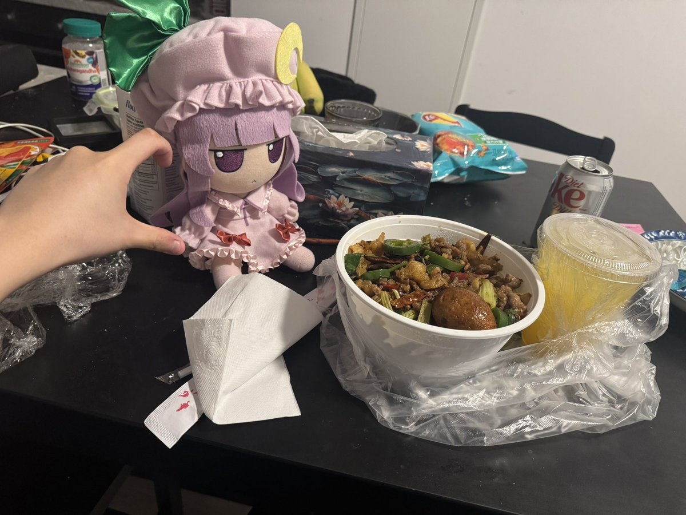
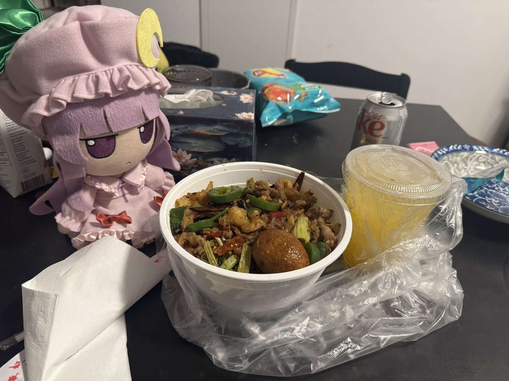

为什么说等于吃了几分之一顿牛肉火锅：因为这个长安小饭堂/Ann's Donburi是他们外送和自提业务的名义，这家店的店内主营就是牛肉火锅，就是那家福牛顺潮汕牛肉火锅/Forsure Chaoshan Beef Hotpot。



带娃吃饭之寿司卷和炒胸口油盖饭
（帕秋莉殿下：沉重的幸福负担……）
寿司卷很好吃，而且新店开业有活动，一些便宜款买一送一，剩下的和贵的款也有买三送饮料。
饭也很香润，想到约等于吃了几分之一顿牛肉火锅很幸福，但是要辣死了呜呜。
Maki Mart 205 Dundas St W
Ann's Donburi 354 Spadina Ave https://t.co/g4xYs1U5rj
（帕秋莉殿下：沉重的幸福负担……）
寿司卷很好吃，而且新店开业有活动，一些便宜款买一送一，剩下的和贵的款也有买三送饮料。
饭也很香润，想到约等于吃了几分之一顿牛肉火锅很幸福，但是要辣死了呜呜。
Maki Mart 205 Dundas St W
Ann's Donburi 354 Spadina Ave https://t.co/g4xYs1U5rj